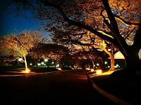

O que eu mais gosto em Santa Bárbara D'Oeste
Comer no Rancho da Costela!

Rancho da Costela Um restaurante típico de fazenda. Além da consagrada costela "Mais Caminhos“, ofertam deliciosos pratos, sobremesas, café premium e chopp de qualidade. Tudo isso em um ambiente campestre, sereno e acolhedor. Em atividade desde 1996.
Conheça mais sobre o Rancho da Costela visitando sua página no facebook
Parque dos Ipês

Tanto no fim de tarde quanto aos finais de semana o Parque dos Ipês é sempre um bom local para passar um tempo com a família.
Descubra mais sobre o Parque dos Ipês pesquisando no google o local.
Caminhar no Caminho dos Flamboyants
Se exercitar é sempre algo recomendável, ainda mais se for em um local agradável e perto da natureza.
Veja no mapa aonde fica esse local